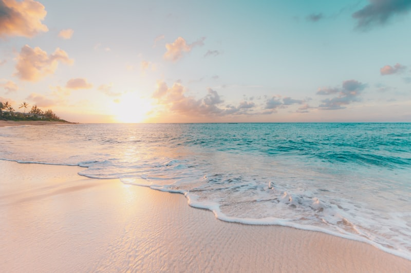

Coucher de soleil à La Maddalena


Le plus beau coucher de soleil du voyage. Les rochers de granit rose deviennent oranges, puis violets. On est restés dans le cockpit sans parler pendant 20 minutes.

Le plus beau coucher de soleil du voyage. Les rochers de granit rose deviennent oranges, puis violets. On est restés dans le cockpit sans parler pendant 20 minutes.